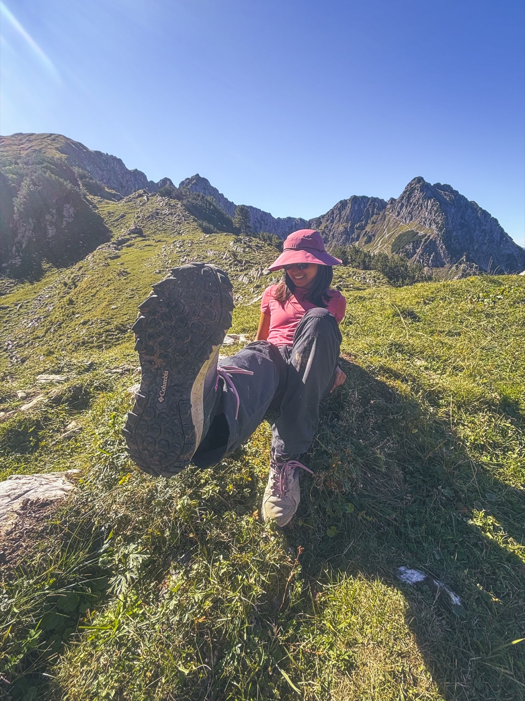
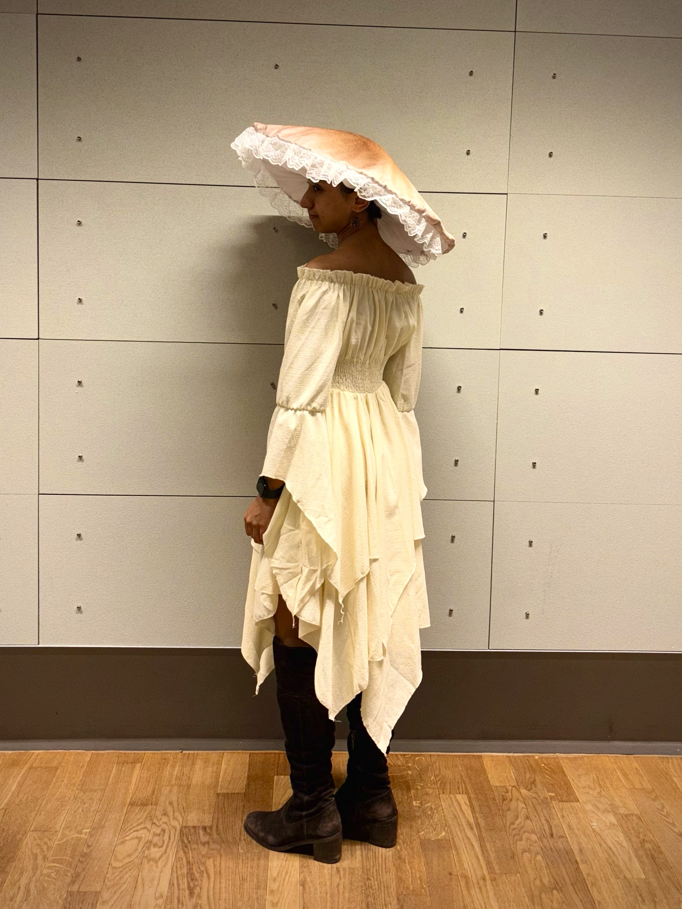

Beyond the lab
Music
I’m trained in Carnatic classical violin and vocals. Carnatic music is a form of Indian classical music from Southern India. What sets it apart is the ornamentations between notes, called gamakas, which give it a completely different feel from Western classical music. If you’re curious, here are two listening handpicks from one of my favorite musicians, L. Shankar, on Spotify: Pancha Nadai Pallavi and Raga Aberi.
I served as convener of IISER Mohali’s Music Club (2021-2022), where I collaborated with the Physics, Art, Literature, and Quiz clubs. I’ve also volunteered with the SPIC MACAY chapter at IISER Mohali to promote Indian classical art forms.
I played the violin for Negative Entropy, IISER Mohali’s Indian-fusion progressive band.

I also enjoy hiking, mushroom foraging, and specialty coffee tasting.

In the Allgäu Alps, Germany.
I’m drawn to alpine lakes with grand reflections. The view’s so nice, you ‘see’ it twice (the German word for lake is ‘der See’).

I try to keep an eye out for mushroom diversity whenever I’m out hiking.